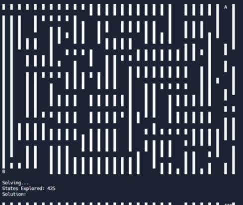
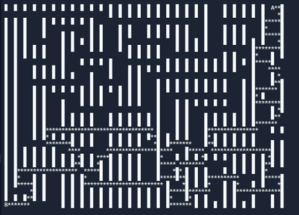
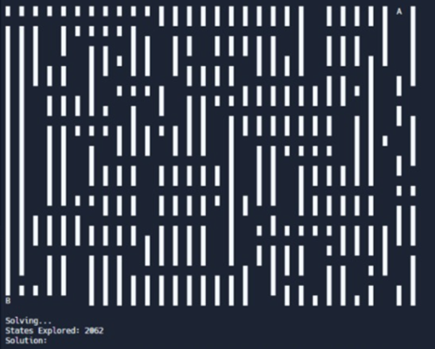
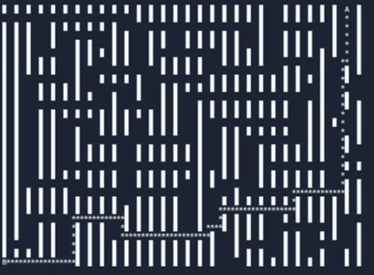
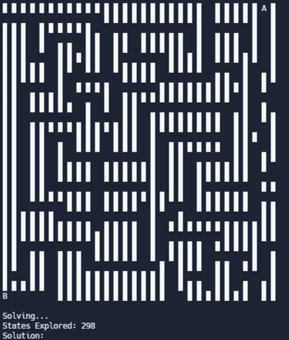
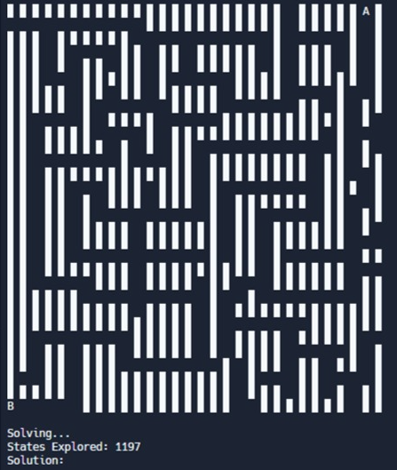
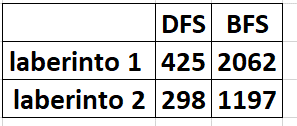
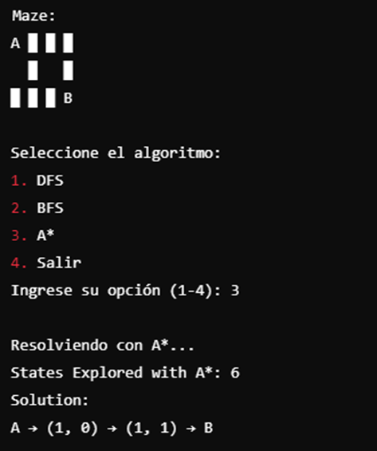

Inteligencia Artificial (IA)
La inteligencia artificial (IA) es el campo de la informática que se centra en crear sistemas capaces de realizar tareas que normalmente requieren inteligencia humana. Estas tareas incluyen el reconocimiento de voz, la toma de decisiones y el aprendizaje automático. La inteligencia artificial (IA) es un campo de la informática que se enfoca en crear sistemas capaces de realizar tareas que normalmente requieren inteligencia humana. Estas tareas incluyen el reconocimiento de patrones, procesamiento del lenguaje natural, toma de decisiones, aprendizaje automático (machine learning) y resolución de problemas. IA débil o estrecha: Diseñada para realizar una tarea específica, como asistentes virtuales (Siri, Alexa), recomendadores de contenido, etc. IA fuerte o general: Tiene la capacidad de aprender y realizar tareas intelectuales de manera similar a los humanos, aunque aún está en desarrollo
Computación en la Nube
La computación en la nube permite el acceso a recursos informáticos a través de internet. Esto incluye almacenamiento, bases de datos, servidores y redes, ofreciendo flexibilidad y escalabilidad a las empresas. La computación en la nube es un modelo de entrega de servicios de tecnología que permite a los usuarios acceder a recursos informáticos (servidores, almacenamiento, bases de datos, redes, software, análisis y más) a través de internet, sin la necesidad de poseer o gestionar infraestructura física propia. En lugar de tener servidores o centros de datos en las instalaciones, las empresas o personas usan los servicios ofrecidos por proveedores de nube. Ventajas de la computación en la nube: Escalabilidad: Permite aumentar o reducir los recursos según las necesidades del usuario. Costo reducido: Elimina la necesidad de invertir en hardware costoso y mantenimiento de infraestructura. Accesibilidad: Los servicios pueden ser accedidos desde cualquier lugar con conexión a internet. Actualizaciones automáticas: Los proveedores de nube gestionan la actualización de software y hardware. Flexibilidad: Soporta una amplia variedad de herramientas y plataformas, lo que permite a las empresas elegir las soluciones que mejor se adapten a sus necesidades.
Ciberseguridad
La ciberseguridad se ocupa de proteger los sistemas informáticos y las redes contra ataques maliciosos. Esto incluye la protección de datos, la prevención de brechas de seguridad y la gestión de riesgos.La ciberseguridad se refiere a las prácticas, tecnologías y procesos diseñados para proteger redes, dispositivos, programas y datos de ataques digitales no autorizados, daño o acceso no autorizado. Con el aumento de la conectividad y el uso de internet, la ciberseguridad ha tomado un papel central en la protección de la información sensible, tanto en el ámbito personal como en el empresarial. Principales componentes de la ciberseguridad: Seguridad de la red: Protege la infraestructura de red de ataques como malware, ransomware, phishing y ataques de denegación de servicio (DDoS). Se utilizan cortafuegos, sistemas de detección de intrusiones (IDS), y otras herramientas para monitorear y proteger el tráfico de red. Seguridad de la información: Garantiza la confidencialidad, integridad y disponibilidad de los datos, evitando accesos no autorizados y asegurando que la información esté disponible cuando se necesite.
La gestión de tecnologías se refiere al proceso de planificar, implementar, supervisar y mantener tecnologías dentro de una organización para mejorar su eficiencia, competitividad y capacidad de innovación. Involucra la administración de recursos tecnológicos, desde infraestructura hasta software, así como el manejo de equipos y procesos para asegurar que las tecnologías apoyen los objetivos estratégicos de la empresa. Principales áreas en la gestión de tecnologías: Selección y evaluación de tecnologías: Implica analizar las necesidades de la organización para elegir las tecnologías más adecuadas. Se deben considerar factores como costos, beneficios, escalabilidad, compatibilidad con sistemas existentes y las tendencias tecnológicas del mercado. Planificación estratégica tecnológica: Integrar la tecnología con la estrategia general del negocio. Esto incluye prever las necesidades futuras y asegurarse de que las tecnologías puedan escalar y adaptarse a cambios en el mercado o la industria. Implementación tecnológica: Involucra la puesta en marcha de nuevas tecnologías, asegurando una correcta integración con sistemas y procesos existentes. Esta etapa suele incluir la capacitación del personal y la creación de procedimientos para su uso efectivoCiberseguridad
La gestión de tecnologías se refiere al proceso de planificar, implementar, supervisar y mantener tecnologías dentro de una organización para mejorar su eficiencia, competitividad y capacidad de innovación. Involucra la administración de recursos tecnológicos, desde infraestructura hasta software, así como el manejo de equipos y procesos para asegurar que las tecnologías apoyen los objetivos estratégicos de la empresa. Principales áreas en la gestión de tecnologías: Selección y evaluación de tecnologías: Implica analizar las necesidades de la organización para elegir las tecnologías más adecuadas. Se deben considerar factores como costos, beneficios, escalabilidad, compatibilidad con sistemas existentes y las tendencias tecnológicas del mercado. Planificación estratégica tecnológica: Integrar la tecnología con la estrategia general del negocio. Esto incluye prever las necesidades futuras y asegurarse de que las tecnologías puedan escalar y adaptarse a cambios en el mercado o la industria. Implementación tecnológica: Involucra la puesta en marcha de nuevas tecnologías, asegurando una correcta integración con sistemas y procesos existentes. Esta etapa suele incluir la capacitación del personal y la creación de procedimientos para su uso efectivo
laberinto 1
   
laberinto 2
 
comparacion de laberinto uno y laberinto 2

explicacion del codigo
Importación de bibliotecas: Importa TensorFlow (para crear y entrenar redes neuronales) y NumPy (para trabajar con arreglos numéricos). celsius = np.array([-40, -10, 0, 8, 15, 22, 38], dtype=float) fahrenheit = np.array([-40, 14, 32, 46, 59, 72, 100], dtype=float) Definición de datos: Crea dos arreglos de NumPy. celsius contiene temperaturas en grados Celsius, mientras que fahrenheit tiene sus equivalentes en grados Fahrenheit. Ambos arreglos son de tipo float. #capa = tf.keras.layers.Dense(units=1, input_shape=[1]) #modelo = tf.keras.Sequential([capa]) Código comentado: Aquí se está definiendo una capa densa simple (con una sola neurona) y un modelo secuencial. Este código está comentado, así que no se ejecuta. oculta1 = tf.keras.layers.Dense(units=3, input_shape=[1]) oculta2 = tf.keras.layers.Dense(units=3) salida = tf.keras.layers.Dense(units=1) Definición de capas: oculta1: Primera capa oculta con 3 neuronas, que espera una entrada de forma [1] (un solo valor). oculta2: Segunda capa oculta también con 3 neuronas. salida: Capa de salida con una única neurona, que producirá un único valor (temperatura en Fahrenheit). modelo = tf.keras.Sequential([oculta1, oculta2, salida]) Creación del modelo: Se construye un modelo secuencial apilando las capas definidas anteriormente. modelo.compile( optimizer=tf.keras.optimizers.Adam(0.1), loss='mean_squared_error' ) Compilación del modelo: optimizador: Se utiliza el optimizador Adam con una tasa de aprendizaje de 0.1. pérdida: Se utiliza la función de pérdida de error cuadrático medio (mean_squared_error), que es adecuada para problemas de regresión. print("Comenzando entrenamiento...") Mensaje informativo: Imprime un mensaje indicando que el entrenamiento está a punto de comenzar. historial = modelo.fit(celsius, fahrenheit, epochs=1000, verbose=False) Entrenamiento del modelo: El modelo se entrena utilizando los datos de Celsius y Fahrenheit durante 1000 épocas. verbose=False significa que no se mostrarán detalles del progreso del entrenamiento. print("Modelo entrenado!") Mensaje informativo: Imprime un mensaje indicando que el modelo ha sido entrenado. import matplotlib.pyplot as plt Importación de Matplotlib: Se importa la biblioteca para crear gráficos. plt.xlabel("# Epoca") plt.ylabel("Magnitud de pérdida") plt.plot(historial.history["loss"]) Visualización de la pérdida: Se establecen las etiquetas para los ejes X e Y del gráfico. Se plotea la magnitud de la pérdida a través de las épocas de entrenamiento. print("Hagamos una predicción!") resultado = modelo.predict([100.0]) Predicción: Imprime un mensaje y utiliza el modelo entrenado para predecir la temperatura en Fahrenheit correspondiente a 100 grados Celsius. print("El resultado es " + str(resultado) + " fahrenheit!") Mostrar resultado: Imprime el resultado de la predicción, convirtiendo el resultado a una cadena. print("Variables internas del modelo") Mensaje informativo: Imprime un mensaje que indica que se mostrarán las variables internas del modelo. #print(capa.get_weights()) print(oculta1.get_weights()) print(oculta2.get_weights()) print(salida.get_weights()) Mostrar pesos: (La línea comentada no se ejecuta). Se imprimen los pesos y sesgos de cada capa en el modelo (oculta1, oculta2 y salida). Estos valores son fundamentales para entender cómo el modelo ha aprendido a realizar la predicción.
algotirmo de bsuqueda
